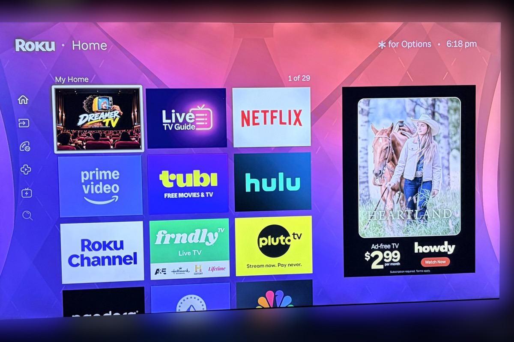

Step 0 · No code
Privacy settings
Ten minutes with your remote. Hide the recommendation rows, turn off personalized ads, reset your advertising ID, and switch off content recognition on Roku-built TVs.
Your apps move up. The ad panel stays, because no setting can remove it.
Read the Step 0 guide